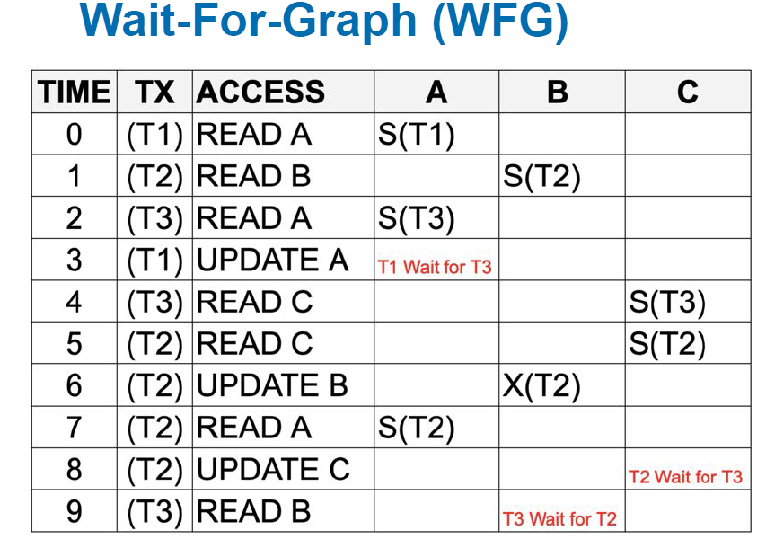
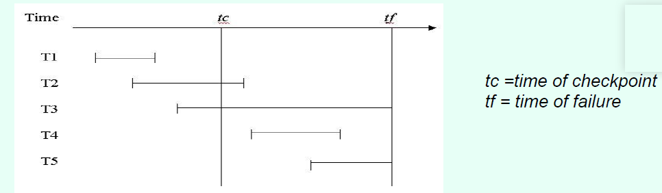

Transaction Management
▪Transactions
–transaction boundaries (start and end)
– Start
• first SQL statement is executed (eg. Oracle)
• Some systems have a BEGIN WORK type command
– End
• COMMIT or ROLLBACK
▪ACID properties
– Atomicity
• all database operations (SQL requests) of a transaction must be entirely
completed or entirely aborted
– Consistency
• it must take the database from one consistent state to another
– Isolation
• it must not interfere with other concurrent transactions
• data used during execution of a transaction cannot be used by a second
transaction until the first one is completed
– Durability
• once completed the changes the transaction made to the data are durable,
even in the event of system failure
▪Transaction problems
Concurrency Management
interleaved transactions
Serial and Interleaved transactions
▪Transaction management with locks. --Locking mechanism.
▪A mechanism to overcome the problems caused by interleaved(no serial)
A transaction must acquire a lock prior to accessing a data item and locks are released when a transaction is completed.
Exclusive Locks: a single transaction exclusively holds the lock on the item
can both read and write to item
Shared Lock: allows other transactions to read the item but not write to this item.
别人读完了我才能锁定Exclusive
▪Wait For Graphs

Deadlock prevention
– A transaction must acquire all the locks it requires before it updates any record.
– If it cannot acquire a necessary lock, it releases all locks, and tries again later.
▪Restart and Recovery using Transaction Log.
REDO list containing the transaction-ids of transactions that were committed.
UNDO list containing the transaction-ids of transactions that never committed

Explain for each transaction what recovery operations will be needed when the
database is restarted and why.
T1 – nothing required, committed before checkpoint
T2 – ROLL FORWARD, committed after checkpoint and before fail
T3 – ROLL BACK, never reached commit
T4 – ROLL FORWARD, started after checkpoint committed before fail
T5 - ROLL BACK, never reached commit
T2, T4-----REDO List ROLL FORWARD —在崩溃前commit了但没在checkpoint前完成
T3,T5 -----UNDO List ROLL BACK ---在崩溃前没有commit
REDO all committed transactions up to the time of the failure - no requirement for
UNDO（已经数据库不会保存没有commit的数据）
A ROLLBACK or UNDO operation is required to restore the database to a consistent state
The database is then rolled forward, using REDO logic and the after-images and rolled back, using UNDO logic and the before-images.
Recovery
REDO all committed transactions up to the time of the failure - no requirement for UNDO